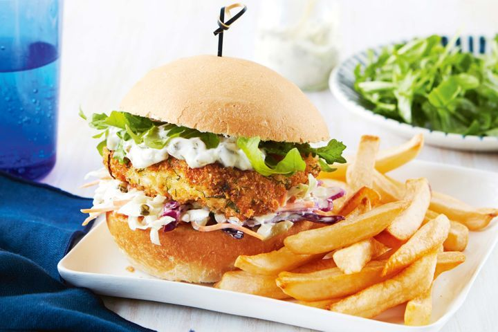

Fish Burger

Description
For a meal the whole family will enjoy, try these tasty fish burgers, topped with crunchy coleslaw, rocket and tartare sauce.
Ingredients
- 2 eggs
- 1/4 cup (35g) plain flour
- 3/4 cup (50g) stale breadcrumbs
- 4 x 150g skinless white fish fillets (about 1.5cm thick), pin-boned
- 1/4 cup (60ml) rice bran oil, to shallow-fry
- 4 soft round buns, split
- Shredded iceberg lettuce, to serve
- 1 large Lebanese cucumber, thinly sliced
- 1/4 cup (60ml) apple cider vinegar
- 1 tsp sugar
- 1 tsp salt
- 1/4 tsp cayenne pepper
- 1/2 cup (150g) mayonnaise
- Finely grated zest of 1 lemon
- 1/4 cup dill leaves, finely chopped
- 1/2 small red onion, very finely chopped
Steps
- Whisk eggs in a shallow bowl and place the flour (seasoned with salt and pepper) and breadcrumbs onto separate plates. Dip a fish fillet into the flour, shake off the excess, then dip into the egg and shake off the excess. Coat in breadcrumbs, pressing on gently.
- Place on a baking tray and repeat until all fish is coated. For the quick pickle, combine the cucumber, vinegar, sugar, salt and cayenne pepper in a glass or ceramic bowl. Cover and place in the fridge until ready to serve.
- For the herbed mayo, combine all the ingredients in a small bowl or jar. Cover and refrigerate until ready to serve. Heat half the oil in a non-stick frypan over medium heat. Working with 2 pieces of fish at a time, cook for 2-3 minutes each side until golden and cooked through.
- Drain on paper towel, and repeat with the remaining fish.
- To assemble, spread the bottom half of each bun with a generous helping of the mayo. Layer the lettuce, then top with fish, pickle and bun top.